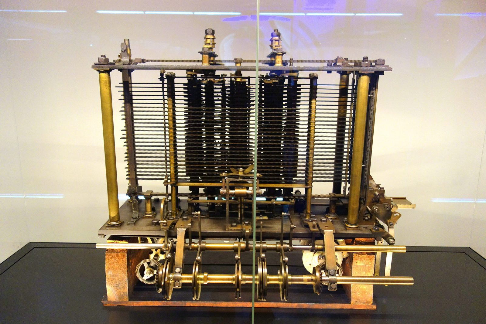

Unit 1 · Lesson 2
The idea of a program
This machine was never finished. So why is it in every history of the computer?
The story
In London in the 1830s, Charles Babbage designed a machine that could calculate anything: the Analytical Engine. He wrote down the full design in 1837.
It had two main parts. The store kept the numbers, like a memory. The mill did the calculations. The orders came from punched cards: cards with holes, where each hole was part of an instruction. Babbage worked on it for the rest of his life, but it was never completed.


In 1843 Ada Lovelace published a step-by-step method for the Engine. It is often called the first computer program.
About a hundred years later, in 1936, Alan Turing wrote a paper called 'On Computable Numbers'. In it he imagined a machine on paper: a long tape divided into squares, a head that reads and writes one square, and a list of rules. Give it the right rules and it can do any calculation that can be done by following rules.


Turing's big idea: one machine can do any job, if you change the rules. The machine stays the same; the rules change. Inside your computer today: the mill is the processor (the CPU), the store is the memory, and every app on your phone is a new list of rules for the same machine.
The science
A program is a list of precise instructions
A program is a list of precise steps that a machine follows exactly, one after the other. An algorithm is the method behind the steps: a step-by-step method that always ends. In the kitchen, the cook follows the recipe step by step, without guessing. The cook is the processor; the recipe is the program. A machine never guesses: if a step is missing, the result is wrong.
- The cook = CPU core
- The metronome = clock (GHz)
- The countertop = cache
- The workbench = RAM
- The pantry = storage (SSD / HDD)
The program and the data, side by side in memory
Data means the numbers, words and pictures a program works on. In Babbage's store, and in every computer today, the program and the data are kept side by side in memory. Example: box 7 holds 4, box 8 holds 3, and the program says 'ADD box 7 + box 8 → box 6'. In the kitchen, the recipe and the ingredients sit together on the workbench, ready for the cook.
- The cook = CPU core
- The metronome = clock (GHz)
- The countertop = cache
- The workbench = RAM
- The pantry = storage (SSD / HDD)
Hardware and software
Hardware is the part you can touch: the chip, the keyboard, the screen, the whole phone. Software is the instructions: the programs and apps. You cannot touch software. The same hardware can do a new job when you change the software. That is Turing's idea.
The Turing machine: a tape, a head, rules
A tape divided into squares. A head that reads one square. A table of rules like: 'if you read 1, write 0 and move left'. Read the square, follow the rule, write, move, repeat. Example, the rules for 'add one' to a binary number: start on the last digit; a 1 becomes 0 and you move left; a 0 or an empty square becomes 1 and you stop. 1011 becomes 1100. The head understands nothing: the rules do the work.
Check now
Quick questions. You see the answer at once.
Software is the part of a computer you can touch.
True or false?
Which of these is NOT part of a Turing machine?
- a tape
- a head
- a screen
- a table of rules
Match each part of Babbage's Analytical Engine to the part of a computer today.
- the store — ?
- the mill — ?
- the punched cards — ?
Try it
Press Step to watch the head follow the rules. Start with 'add one' on 1011, then try 111 and the 'flip bits' machine.
Paper version
Rules for 'add one': start on the LAST digit, state CARRY. Read 1 → write 0, move left, stay in CARRY. Read 0 → write 1, stop. Read an empty square → write 1, stop. Trace for 1011 (eleven): head on the 4th digit (1) → write 0, move left: 1010 · head on the 3rd digit (1) → write 0, move left: 1000 · head on the 2nd digit (0) → write 1, stop: 1100 (twelve). 3 rules applied. Trace for 111 (seven): 110 · 100 · 000 · the empty square on the left becomes 1, stop: 1000 (eight). 4 rules applied. Rules for 'flip bits': start on the FIRST digit. Read 0 → write 1, move right. Read 1 → write 0, move right. Read an empty square → stop. 1001 becomes 0110 (5 rules applied).
Your turn
Exercises
From ★☆☆ (easy) to ★★★ (hard). Use a hint if you are stuck.
-
Exercise 1 ★☆☆
Hardware or software? Match each thing to its kind.
- a keyboard — ?
- a game app — ?
- the processor chip — ?
- the operating system — ?
-
Exercise 2 ★☆☆
What is an algorithm?
- a part of the processor
- a step-by-step method that always ends
- a kind of punched card
-
Exercise 3 ★☆☆
Put these in time order, from the oldest.
- Ada Lovelace publishes her method for the Engine
- Babbage writes down the design of the Analytical Engine
- Turing imagines his machine in 'On Computable Numbers'
-
Exercise 4 ★★☆
The tape shows 111 (seven in binary). The machine runs 'add one'. What number, in decimal, is on the tape at the end?
-
Exercise 5 ★★☆
The machine runs 'flip bits' on the tape 1001. What is on the tape at the end?
- 0110
- 1001
- 1010
-
Exercise 6 ★★☆
Turing built his machine in a workshop in 1936.
True or false?
-
Exercise 7 ★★☆
Your team document needs a table of contents that updates by itself. What must you use for the headings?
- bold text, size 16
- the Heading 1 and Heading 2 styles
- capital letters
-
Exercise 8 ★★★
'Your phone is a universal machine.' Explain this sentence using the words hardware, software and program.
In one sentence
A program is a list of precise rules; the same machine can follow any program.
Words of the chapter
- program
- a list of precise instructions a machine follows programma
- algorithm
- a step-by-step method that always ends algoritmo
- data
- the numbers, words and pictures a program works on dati
- hardware
- the parts of a computer you can touch hardware
- software
- the instructions: programs and apps software
- store · mill
- Babbage's names for the memory and the calculating part magazzino · mulino
- punched card
- a card with holes; the holes are instructions or data scheda perforata
- Turing machine
- an imaginary machine: a tape, a head, a list of rules macchina di Turing